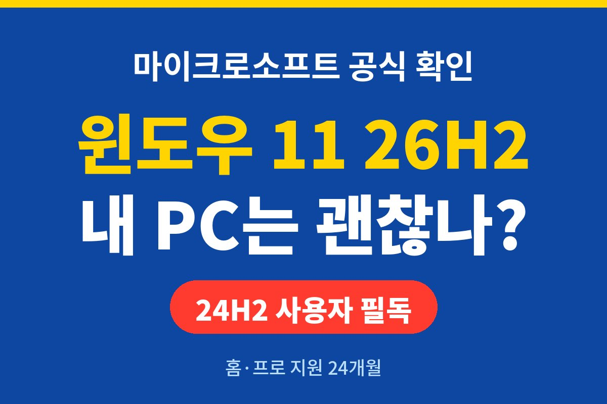
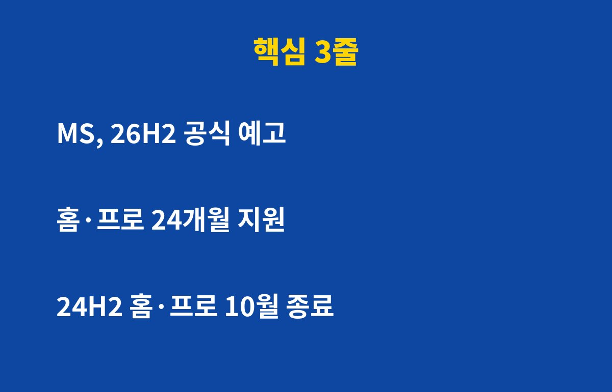
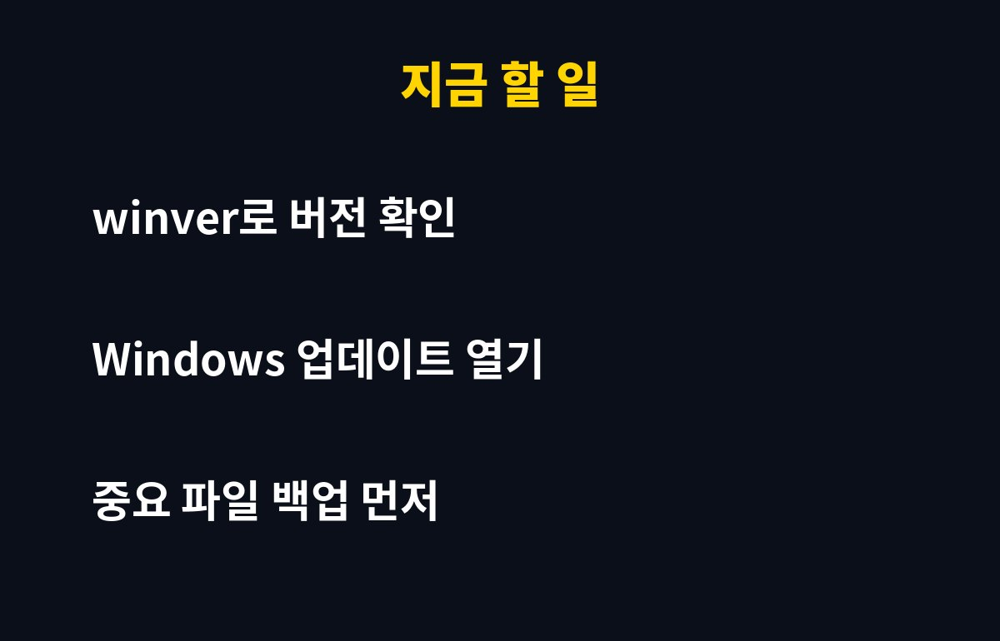

윈도우 11 26H2가 마이크로소프트 공식 공지로 확인됐어요. 그런데 진짜 급한 건 새 버전이 아니라, 지금 많이들 쓰는 24H2 홈·프로 버전이 이번 10월로 지원 기간이 끝난다는 사실이거든요.
"업데이트 나중에" 버튼만 누르던 분이라면 오늘 3분만 투자하세요. 내 PC가 보안 패치 없는 상태로 굴러갈 수 있으니까요.
마이크로소프트는 관리자용 메시지 센터 공지(MC1397393)에서 "윈도우 11 26H2를 준비하라"고 안내했어요. 회사 IT 관리자들한테 미리 테스트하고 배포 계획 세우라는 신호죠.
윈도우 11은 1년에 한 번 큰 기능 업데이트가 나와요. 이름 뒤의 H2는 "그해 하반기"라는 뜻이에요. 그러니까 윈도우 11 26H2는 2026년 하반기 버전이란 얘기죠. 정확한 일반 배포 날짜와 새 기능 목록은 아직 공식 발표를 지켜봐야 해요. 여기서 숫자를 지어내진 않을게요.
윈도우 11 버전마다 유통기한이 있어요. 마이크로소프트 정책상 홈·프로는 출시 후 24개월, 엔터프라이즈·에듀케이션은 36개월 동안 보안 업데이트를 받아요.
2024년 가을에 나온 24H2는 홈·프로 기준으로 이 24개월이 2026년 10월에 꽉 차요. 지원이 끝나면 새로 발견된 보안 구멍을 막아 주는 패치가 더 이상 안 와요. 문은 열려 있는데 경비원이 퇴근한 셈이죠. 랜섬웨어(파일을 잠그고 돈을 요구하는 악성코드) 같은 공격에 그대로 노출될 수 있어요.

생각보다 간단해요.
1. 키보드에서 윈도우 키 + R을 누르세요.
2. 창에 winver라고 치고 엔터.
3. 뜨는 창에서 "버전 24H2", "25H2" 같은 글자를 확인하면 끝이에요.
| 내 상황 | 해야 할 일 |
|---|---|
| 홈·프로 24H2 | 지원 종료 시점이라 바로 최신 버전으로 업데이트 |
| 25H2 이상 | 월간 보안 업데이트만 꼬박꼬박 설치 |
| 회사 PC(엔터프라이즈) | 지원 기간 36개월, IT 담당자 안내 따르기 |
| 윈도우 10 | 윈도우 11 업그레이드 가능 여부부터 점검 |
1. 설정 → Windows 업데이트로 들어가세요.
2. "업데이트 확인"을 누르고, 기능 업데이트가 보이면 "다운로드 및 설치".
3. 재부팅은 작업 끝난 뒤에. 노트북이면 충전기 꼭 꽂아 두세요.
업데이트 전에 사진, 업무 문서 같은 중요한 파일은 외장하드나 클라우드에 한 번 백업해 두는 게 좋아요. 사고는 꼭 백업 안 한 날 나거든요.

꼭 첫날일 필요는 없어요. 새 버전 초반엔 드라이버나 프로그램 호환 문제가 종종 나오거든요. 업무용 PC라면 몇 주 지켜보고 올려도 늦지 않아요. 단, 지원이 끝난 버전에 머무는 건 얘기가 달라요. 윈도우 11 26H2를 기다리느라 24H2에서 버티는 건 오히려 손해예요.
여러분 PC는 지금 몇 버전인가요? 확인해 보고 댓글로 알려 주세요. 놓치면 아까운 IT 소식, 구독해 두시면 제일 먼저 챙겨 드릴게요.
기사·공식 발표 기준이며 출시·가격 정보는 바뀔 수 있어요.